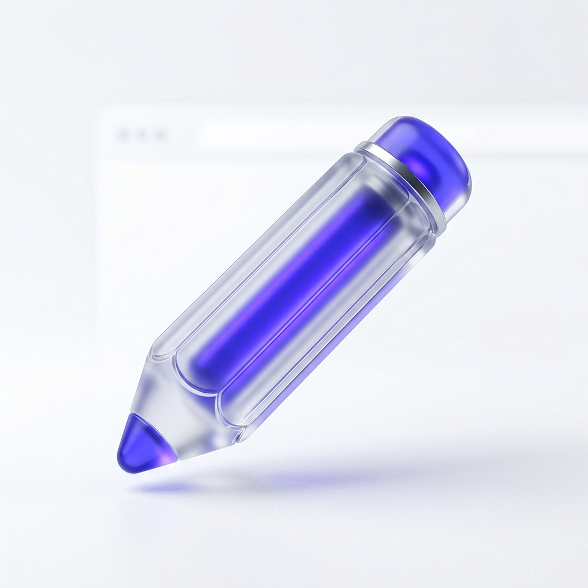

The high-performance annotation engine for the modern student. Built to handle React/Angular LMS environments with zero-jitter ink.
Our Heartbeat Engine automatically recovers drawings when React or Angular re-renders the page. Never lose a note again.
Advanced coordinate resolution ensures your marks stay exactly where you put them, even on extremely long scrollable pages.
Fully optimized for touch-screens and tablets with palm rejection and swipeable toolbars.